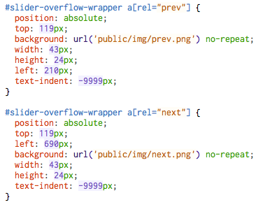

You've all seen this before. It's the Google Play slider. (A crude mockup of it.) Anyway, here's how I built my shitty version using HTML (and Javascript).
The basic structure of the slider expressed as, you guessed it, HTML.
The .container class isn't required, but nice to have.
overflow:hidden and position:relative to #slider-overflow-wrapperStyle the ul#slider and it's children like this
Notice we've built the slider wide enough to stack four slides side by side inside of it. Because the slides are floated left, they'll natrually cosy up to each other. We know in advanced that this slider only needs to be four slides wide. It won't get any bigger or smaller than that. If you don't know the width, you'll have to target ul#slider on page load and stretch its width using Javascript.
Also notice that children of the slider that aren't selected have been dimmed down.
Lastly, target the next and previous buttons. They are just absolutely positioned anchor tags contained within the container.
We have a jQuery based controller, so you need to include jQuery at the top of the page.
(function($) {
var slider = $("#slider");
var next = $("#slider-overflow-wrapper a[rel='next']");
var prev = $("#slider-overflow-wrapper a[rel='prev']");
function sct_woble( element, direction ) {
var o_pos = parseInt(slider.css("margin-left"));
if ( direction == 'right' ) {
var n_pos = o_pos - 100;
} else {
var n_pos = o_pos + 100;
console.log(n_pos);
}
slider.animate(
{marginLeft: n_pos},
100,
function() {
slider.animate( {marginLeft: o_pos}, 500, function() {} );
}
);
}
next.click( function() {
if ( slider.is(':animated') ) { return false; }
if ( $('#slider li:last-child').attr('class') == 'active' ) {
sct_woble( slider, 'right' );
return false;
}
var curr_pos = parseInt(slider.css("margin-left"));
var new_pos = curr_pos - 493;
slider.animate(
{marginLeft: new_pos},
400,
function() {
// move active to the next one
slider.find('li.active').removeClass('active').next().addClass('active');
}
);
});
prev.click( function() {
if ( slider.is(':animated') ) { return false; }
if ( $('#slider li:first-child').attr('class') == 'active' ) {
sct_woble( slider, 'left' );
return false;
}
var curr_pos = parseInt(slider.css("margin-left"));
var new_pos = curr_pos + 493;
slider.animate(
{marginLeft: new_pos},
400,
function() {
// move active to the next one
slider.find('li.active').removeClass('active').prev().addClass('active');
}
);
});
})( jQuery );
The next.click() and prev.click() basically do the same thing and should be refactored slightly to trim code lines but here are the three main things they both do:
sct_woble( element, direction ) where the element is always the slider and the direction is either 'left' or 'right'.